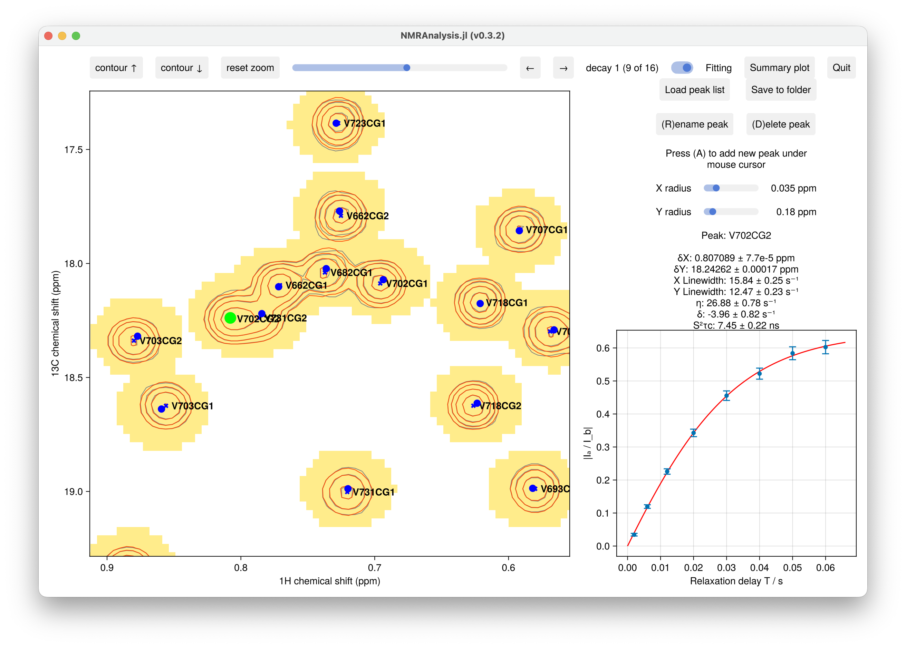
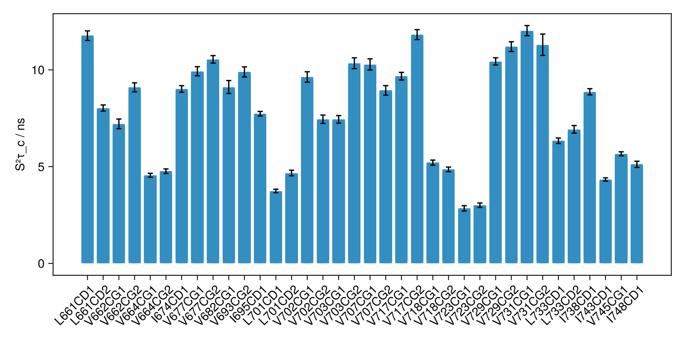

Methyl Cross-Correlated Relaxation (S²τc)
The methylccr2d function measures methyl-axis dynamics from a pair of pseudo-3D ¹H–¹H cross-correlated relaxation (CCR) experiments — a buildup series (Ia) and a decay series (Ib) — recorded as a function of a relaxation delay $T$. For each methyl peak, the intensity ratio $|Ia/Ib|$ is fitted against $T$ to extract the cross-correlated relaxation rate $\eta$, which is then converted to the methyl order parameter × global tumbling time, $S^2\tau_c$.
This complements the single-delay ccr2d analysis: here a full relaxation series is fitted to the analytical buildup/decay ratio.
Theory
The intensity ratio follows (eq 7 of the reference below):
\[\left|\frac{I_a}{I_b}\right| = C\,\frac{\eta\,\tanh\!\left(\sqrt{\eta^2+\delta^2}\,T\right)} {\sqrt{\eta^2+\delta^2} - \delta\,\tanh\!\left(\sqrt{\eta^2+\delta^2}\,T\right)}\]
where $\eta$ is the cross-correlated relaxation rate (s⁻¹) and $\delta < 0$ accounts for coupling between the rapidly- and slowly-decaying ¹H single-quantum coherences. The prefactor $C$ is fixed by the experiment: $C = 3/4$ for the triple-quantum (TQ) variant and $C = 1/2$ for the double-quantum (DQ) variant.
The fitted $\eta$ is converted to $S^2\tau_c$ (eq 1), assuming ideal methyl geometry (the H–H vector perpendicular to the methyl 3-fold axis, so $\theta = 90^\circ$ and $[P_2(\cos\theta)]^2 = 1/4$):
\[\eta = \frac{9}{10}\left(\frac{\mu_0}{4\pi}\right)^2 \left[P_2(\cos\theta_{\text{axis,HH}})\right]^2 \frac{S^2_{\text{axis}}\,\gamma_H^4\,\hbar^2\,\tau_c}{r_{HH}^6} \;\;\Longrightarrow\;\; S^2\tau_c = \frac{\eta}{K}\]
with $r_{HH} = 1.813$ Å and
\[K = \frac{9}{40}\left(\frac{\mu_0}{4\pi}\right)^2 \frac{\gamma_H^4\,\hbar^2}{r_{HH}^6} \approx 3.61\times10^{9}\ \text{s}^{-2},\]
so that $S^2\tau_c\,(\text{ns}) \approx 0.277\,\eta$ for $\eta$ in s⁻¹.
Hechao Sun, Lewis E. Kay, Vitali Tugarinov, An Optimized Relaxation-Based Coherence Transfer NMR Experiment for the Measurement of Side-Chain Order in Methyl-Protonated, Highly Deuterated Proteins, J. Phys. Chem. B 2011, 115 (49), 14878–14884.
Usage
T is given in seconds. Each series may be a single pseudo-3D dataset (one path string) or a vector of per-delay 2D datasets; both must have one plane per delay.
using NMRAnalysis
# buildup and decay each as a pseudo-3D dataset
methylccr2d("11", "12", [0.001, 0.002, 0.004, 0.006, 0.010])
# double-quantum variant (C = 1/2)
methylccr2d("11", "12", [0.001, 0.002, 0.004, 0.006, 0.010]; C=1/2)The buildup and decay series are loaded into a single dataset and normalised by a common noise level, so the intensity ratio $|I_a/I_b|$ is preserved. Each residue panel plots $|I_a/I_b|$ against $T$ with the eq 7 fit (showing $\eta$ and $\delta$).

Excluding delays from the fit
Pass the 1-based indices of any delays to omit via skipplanes. All spectra are still loaded and displayed; skipped points appear as open grey markers and are not used when fitting $\eta$ and $\delta$. The full delay list must always be supplied.
Output
Clicking Save to folder writes all results to results.csv. Alongside peak positions, linewidths and the per-plane amplitudes, the derived columns are:
| Column | Description |
|---|---|
S2tc, S2tc_err | Derived $S^2\tau_c$ (ns) and uncertainty |
eta, eta_err | Fitted CCR rate $\eta$ (s⁻¹) and uncertainty |
delta, delta_err | Fitted coupling term $\delta$ (s⁻¹) and uncertainty |
See Peak Lists and Output Files for the full format. Plot $S^2\tau_c$ per methyl group with summaryplot:
fig = summaryplot("output/", size=(800,400)) # S²τc (ns) per methyl, the default